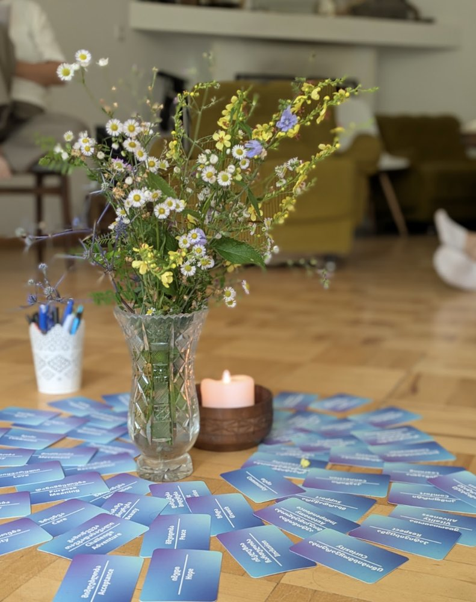
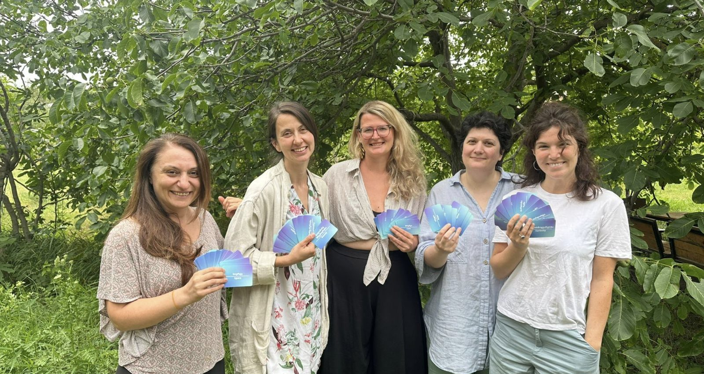

NVC practice group
ExampleInvitationDate to be added
NVC Georgia is a community of people learning and sharing a way of communicating that supports understanding, empathy and peaceful connection.

At its heart is the idea that all people share the same basic needs, and that understanding them makes connection possible — in families, at work and in communities. The Center for Nonviolent Communication (CNVC), founded by Rosenberg, certifies NVC trainers around the world.
Nonviolent Communication (NVC) was developed by the American psychologist Marshall B. Rosenberg in the 1960s and 1970s. It helps us speak honestly and listen with empathy by paying attention to four things: what we observe, what we feel, what we need, and what we would like to ask for.
Visit cnvc.org → Learn more — see our materials →
We are practitioners developing Nonviolent Communication in Georgia — translating materials, hosting gatherings and creating space for dialogue.


 Team
Meet the people behind NVC Georgia
More about the team →
Team
Meet the people behind NVC Georgia
More about the team →